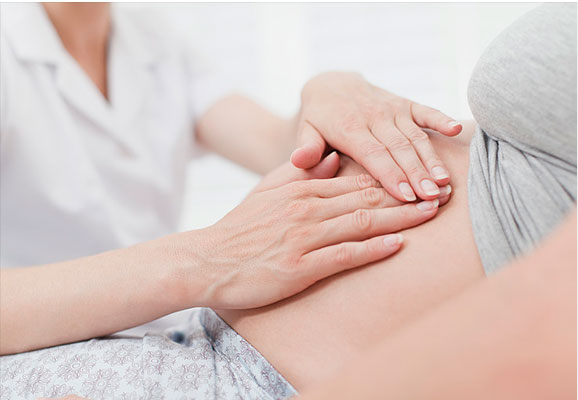
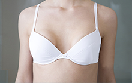
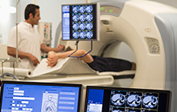
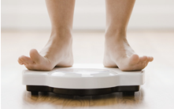

完整疗愈健康管理中心
通过生物电，生物共振，能量学，心理等方法，综合对客人进行细胞层面的保养，
尤其是线粒体ATP层面上的保养。

产后修复
产后修复是专门针对产后妈妈的各种生理及心理变化，提供的各项修复护理的整体方案。包括产后脱发，乳房保养与治疗，子宫肌瘤治疗，妊娠纹修复，产后减肥，盆腔康复。对每个产后妈妈提供个性化需求，制订体检、解决方案、有效促进产后恢复，打造健康而又美丽的妈妈。
MORE
ACGF自体活细胞毛发再生 产后修复
妇女在生产之后头发异常脱落。有的妇女在生产四个月后会有掉发的现象，这是体内激素重新调整所引起。妊娠期延长了毛 囊的休眠期，而产后就加速进入脱发期，这时如果精神上有大压力或是宝宝晚上哭闹不睡，这个问题就更为严重。
MORE

CLA自体活细胞丰胸
CAL自体活细胞丰胸技术，增加了脂肪活跃性，在需要注射的脂肪中增加了活细胞数量，极大化促进脂肪成活率，减少术后的 吸收率，能满足脂肪增多带来的丰满效果，是真正天然的真乳房，给您最自然、持久、安全、健康的丰胸方法，瘦身、美胸一 步到位。
MORE

聚焦超声肿瘤消融机治疗子宫肌瘤
贝德瑞聚焦超声肿瘤消融机，将体外低能量的超声波聚焦于体内病灶，利用超声波的热效应和机械效应，在焦点处产生瞬间的高 温，进行由点到线、由线到面、由面到体逐点扫描固化的方式，使病灶组织不可逆坏死，达到既杀灭病灶组织又不损伤靶区外组 织，实现治疗目的。
MORE
自体活细胞祛妊娠纹
自体活细胞祛妊娠纹原理提取自身血液的活细胞，通过真皮浅层注射方法注射到皮肤中，含多种自体生长因子可深入整个皮肤组 织，修复受损的细胞肌体，激活细胞活性，调整皮肤全层结构，可刺激大量胶原蛋白、弹性纤维、胶质等的产生，让皮肤组织重 组再生。
MORE

聚焦超声塑身技术
聚焦超声塑身技术是一种超声治疗前沿技术，该治疗技术目前的专利申请已覆盖20多个发达国家，在美国、俄罗斯、加拿大、 日本、新加坡、韩国和澳大利亚共7个国家获得了发明专利权。以分散的形式无创透过表皮和真皮，聚焦与皮下10-20nn脂肪 层，焦点处能量发挥机械效应和空化效应。
MORE